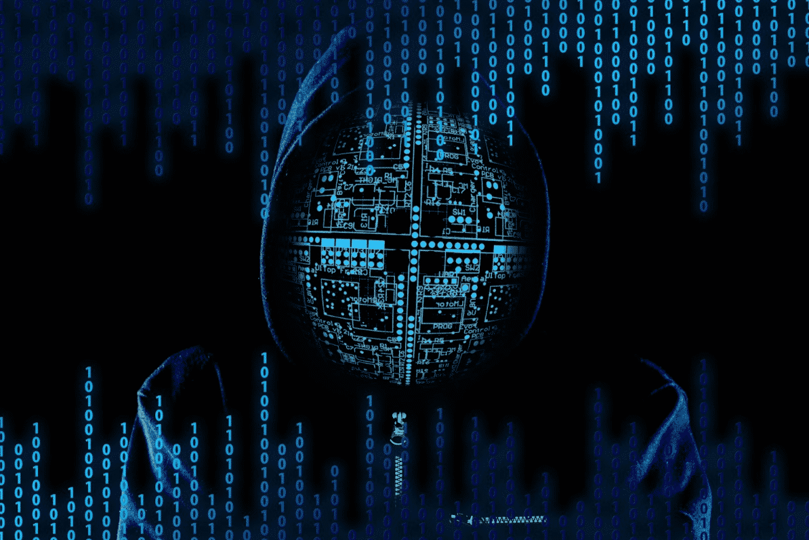
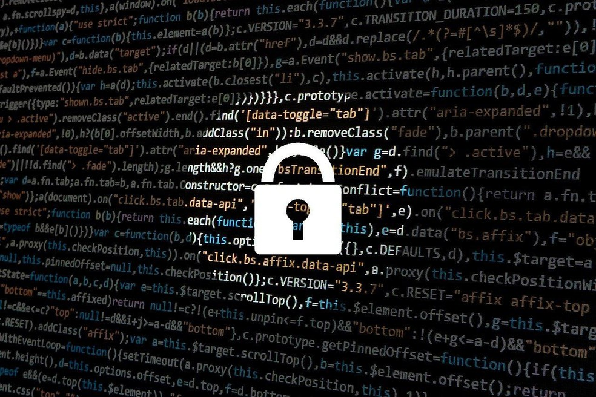

ciberseguranca
a cibersegurança
A cibesegurança é a área da computação que estuda a engenharia por trás da proteção das tecnologias que usamos em nosso dia a dia. Nela inclui a proteção, muita das vezes com um sistema criptografado para os sistemas, visando proteger computadores e servidores, dispositivos móveis, sistemas eletrônicos, redes e dados contra ataques maliciosos. É aplicado a uma variedade de contexto, dos negócios aos dispositivos móveis.
Segurança de rede
Na segurança de rede busca-se criar uma proteção contra criminosos virtuais, sendo eles invasores com intenções ou malware infecciosos. Assim protegendo informações e dados de clientes, funcionários, bancários, empresariais e etcs.
Os ataques via wifi são os mais frequentes nessa modalidade.
Segurança de aplicativos
A segurança de aplicativos é algo de extrema importância para desenvolvedores de Apps, para dispositivos móveis, pois é onde passa e armazena dados e informações pessoais e empresariais. Com o crescimento do uso do celular, muitos serviços, sistemas, comunicação tem se adaptado aos dispositivos móveis, por facilitar nossas vidas. Com o tempo cada vez mais tem crescido os investimentos para Apps seguros. Para nos protegermos, temos diversos tipos de validação para o acesso a nossas contas nos Apps, dentre elas estão reconhecimento facial, digital, criptografias 2 passos, Qr code, código por e-mail e mensagem, autenticadores, todos buscando nós trazermos segurança ao uso.
Segurança de informações
Na segurança da informação, busca-se trabalhar diretamente a proteção dos dados e informações, independente da forma. Nela a proteção é muito mais além de só os dados, assim como conversas, imagens, vídeos, dados de usos e etcs.. Preservando a integridade das pessoas físicas e jurídicas. Assim dando continuidade às operações.
Segurança operacional
Na segurança operacional vamos abordar o estudo que busca desenvolver um sistema de segurança de dados. Onde mostrará até onde e por quem esses dados podem ser acessados, armazenados e compartilhados. De forma que se tenha uma permissão, através de uma conta, para acessar. Assim limitando e protegendo certas informações.
Recuperação de desastres e continuidade dos negócios
Nesta área é estudo, formas de como empresas se planejam e se comportam durante e após um desastre de cibersegurança. Isso envolve desde de uma queda de energia a um ataque hacker. De forma que não impacte a empresa de parar e continuar operando e gerando receita. A empresa tendo um plano em mãos consegue passar por uma situação dessa e se recupera melhor, não perdendo sua produtividade e nem perdendo seus dados por completo.
Educação do usuário final
O usuário na área da segurança dos sistemas, é o mais imprevisível. Podendo sem perceber introduzir um vírus em um sistema seguro, e assim comprometendo a segurança. Por isso, além de um sistema seguro, temos que ensinar os procedimentos de segurança aos usuários, para que seja feita uma junção eficaz para a segurança. Ensinando identificar um possível vírus, durante a usabilidade.
10 etapas para segurança cibernética
Assim como a tecnologia vem crescendo, a ameaça virtual vem acompanhando esse desenvolvimento. Tem registrado um número impressionante de ataques cibernéticos nos últimos anos. Empresas têm gastado milhões na segurança de seus sistemas. O Centro Nacional de Cibersegurança do governo do Reino Unido, montou um projeto de orientação para combater e prevenir as ameaças, em 10 etapas.
Regime de Gestão de Risco
No regime de gestão de risco, deve-se incorporar em toda organização regras e políticas, aprovadas pelo conselho e a alta administração, e com a garantia de que está ciente todos funcionários, contratados e fornecedores, das normas estipuladas em que todos devem seguir para a eficácia da segurança.
Configuração segura
Deve ser feito uma pesquisa, para encontrar as vulnerabilidades do sistema, de forma a identificar uma estratégia para uma melhor configuração do sistema, com isso diminuindo os riscos e aumentando a segurança do sistema.
Segurança de rede
A conexão de redes entre parceiros expõem o sistema a ataques. Com isso as redes de dados se abrangem em muitas conexões. E em vez de focar em conexões físicas, tem que ser pensado onde serão armazenados e processados, e onde tem o perigo de acontecer uma invasão.
Gerenciando privilégios de usuário
Os usuários devem ter acesso aos dados necessários, para evitar o uso indevido, assim não comprometendo-o. Deve ser controlada e gerenciada o acesso dos usuários para melhor segurança de ambos.
Educação e conscientização do usuário
Assim como citamos antes, os desenvolvedores devem treinar e conscientizar os usuários dos perigos que podem enfrentar ao uso. Assim assegurando a segurança de ambos.
Gestão de incidentes
Todas organizações estão sujeitas a algum momento passar por um incidente de segurança. Com isso deve ser criado uma estratégia para saber lidar com a situação quando chegar. Contratando especialistas da área, para criar um sistema seguro e preparado.
Prevenção de malware

Ao adquirirmos software, estamos sujeitos a se dar com um malware, por isso deve-se desenvolver políticas anti-malware. Assim prevenindo a infecção por um malware (software malicioso).
Monitoramento
O monitoramento é um serviço que visa detectar um ataque ao sistema. Com isso podemos responder a ataques e verificar se o sistema está sendo usado de forma adequada às políticas organizacionais.
Controles de mídia removíveis
A mídia removível é um canal perigoso para a introdução de malware e o roubo de dados. Deve seguir uma política rígida a serviços que necessitem de um modelo de conexão externa ao sistema.
Trabalho doméstico e móvel
O trabalho remoto tem seus benefícios para ambas as partes. Mas as organizações devem instruir seus funcionários a usar o sistema de forma adequada, para prevenir os riscos.
Os perigos cibernéticos
A internet tem inúmeras funcionalidades nos dias de hoje, com o intuito de encurtar o tempo e a dor de cabeça. Hoje em dia você consegue comprar uma televisão de 50 polegadas com poucos cliques, ou fazer o download de um aplicativo que certamente irá facilitar a sua vida. Mas será que todos esses serviços são confiáveis? Veja agora os mais conhecidos ataques cibernéticos.
Tipos de ameaça
Crime cibernético, ou crime virtual é uma atividade que tem o objetivo “enganar” o usuário, por exemplo um site de compras adulterado que visa copiar seus dados bancários. Esses crimes são cometidos para obter dinheiro e dados do usuário.
Ataque cibernético tem como objetivo invadir um determinado sistema com o intuito de roubar as informações com o intuito de expor, alterar, desativar, destruir ou apagar informações.
Terrorismo cibernético é o uso da internet para realizar atos violentos que visam espalhar o caos entre as pessoas, com o interesse politico ou ideológicos. Eles usam a intimidação, ameaça e ataques cibernéticos para conseguir esses feitos.
(Imagem: https://acaditi.com.br/como-ser-um-hacker-profissao-tao-requisitada-no-mercado/)
Malware
Como se não fossem pessoas mal intencionadas tentando nos enganar, há pessoas que também são mal intencionadas fazendo malware para prejudicar os usuários da internet. Malware é software malicioso, com o intuito de prejudicar ou danificar computadores, e são os ataques mais comuns na internet e há milhares deles espalhados, por exemplo:
Vírus tem o intuito de infectar um sistema, se multiplicar com um código malicioso e ir para outros dispositivos (bem parecido com o vírus biológico).
Cavalo de tróia geralmente está disfarçado de um software, mas ao ser instalado, usa as permissões concedidas pelo usuário para roubar os dados do usuário e usufruir dos dados roubados.
Spyware traduzindo para o português, seria “Software espião”. Ele geralmente é instalado em computadores e celulares sem a percepção da vítima. Ele registra tudo o que o usuário faz, podendo gravar até dados bancários.
Ransomware é um sequestro de um sistema ou de dados. Ele restringe o uso ou acesso de tal dado ou sistema infectado, tendo a condição de ser liberado apenas para pagar uma certa quantia estipulada pelo criminoso.
Adware, um dos mais irritantes. Ele é um malware que executa e exibe automaticamente milhares de anúncios sem a permissão do usuário.
Botnets, são bots ou redes zumbis que visam infectar milhares de usuários. Os bots executam uma determinada função atribuída a ele, geralmente visando roubar dados pessoais, ou seja, o crime é automatizado para obter um maior número de vítimas.
Injeção de SQL
A injeção SQL (Linguagem de consulta estruturada) é um tipo de ataque cibernético. Ele usa de falhas no banco de dados para injetar um código malicioso, com o intuito de roubar informações valiosas e assumir o controle dos dados.
Phishing
Geralmente atacam por e-mails, e usam a forma legítima de uma empresa, convencendo os usuários a passar seus dados bancários.
Ataque “Man-in-the-middle”
Um ataque Man-in-the-middle é um tipo de ameaça virtual em que o criminoso intercepta a comunicação do usuário com a rede, assim consegue extrair dados pessoais ou monitorar as atividades da vítima na rede.
Apresentamos nesta matéria alguns tipos de vírus que podemos encontrar navegando. Também foi abordado formas de segurança para evitar isso e um projeto com 10 etapas para melhorar a segurança dos sistemas. Para sabermos mais sobre nós desenvolvedores da sociedade hacker. Clique aqui para Quem Somos